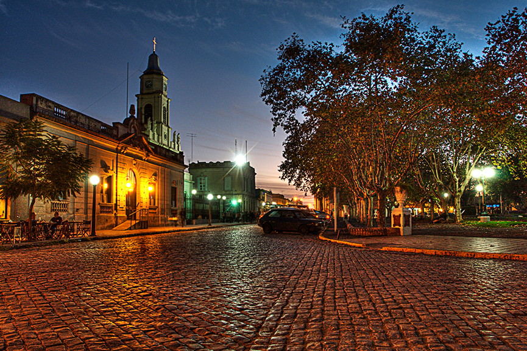
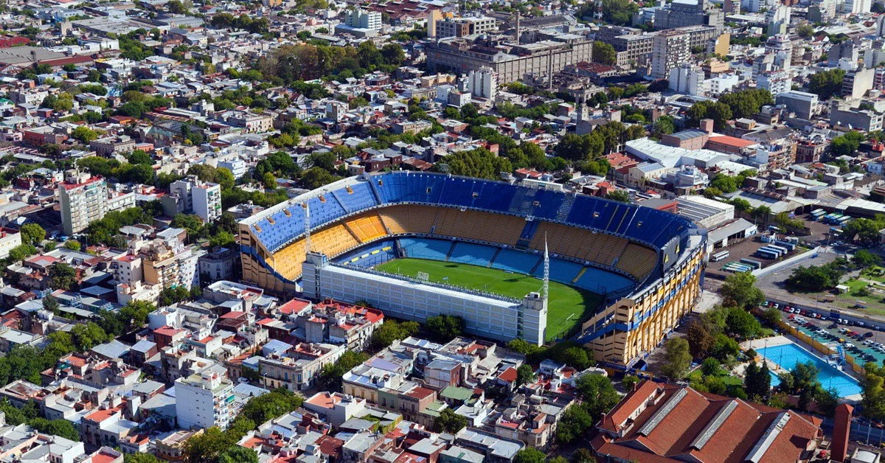
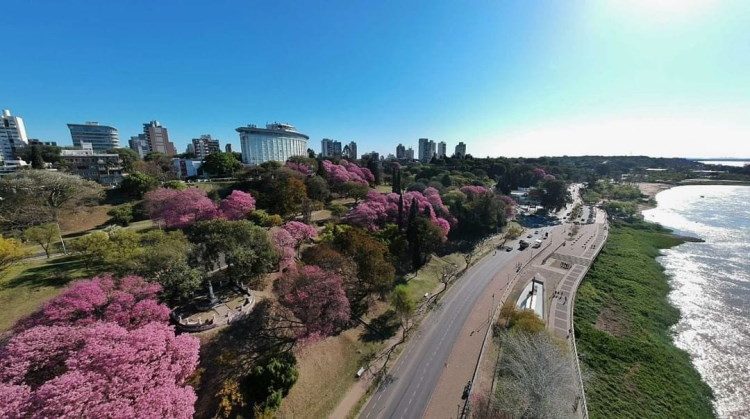

La ciudad de San Antonio de Areco es una ciudad ubicada en la provincia de Buenos Aires. La ciudad es conocida por su arquitectura colonial, su tradición gaucha y su gastronomía regional.
La Boca es un barrio ubicado en la ciudad de Buenos Aires, conocido por sus casas coloridas, su cultura porteña y su pasión por el fútbol. La Boca es un lugar vibrante y colorido que ofrece una experiencia única de Buenos Aires.
Paraná es la capital de la provincia de Entre Ríos y una importante ciudad fluvial. La ciudad es conocida por su arquitectura, su cultura y su gastronomía. Paraná es un excelente lugar para aprender sobre la historia y la cultura de la pampa húmeda argentina.
Tandil es una ciudad ubicada en la provincia de Buenos Aires, a orillas del río Tandil. La ciudad es conocida por su belleza natural, su tranquilidad y su tradición gaucha. Tandil es un excelente lugar para relajarse y disfrutar de la naturaleza. Además, Tandil es un importante centro de producción de quesos y dulces.